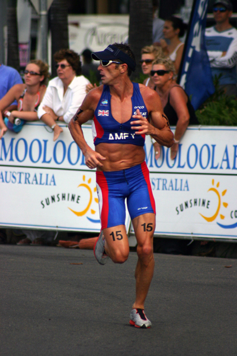
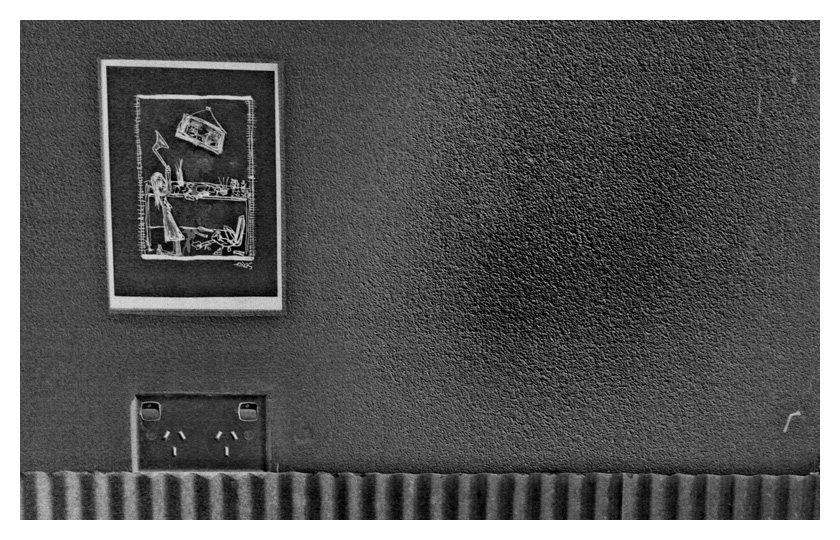
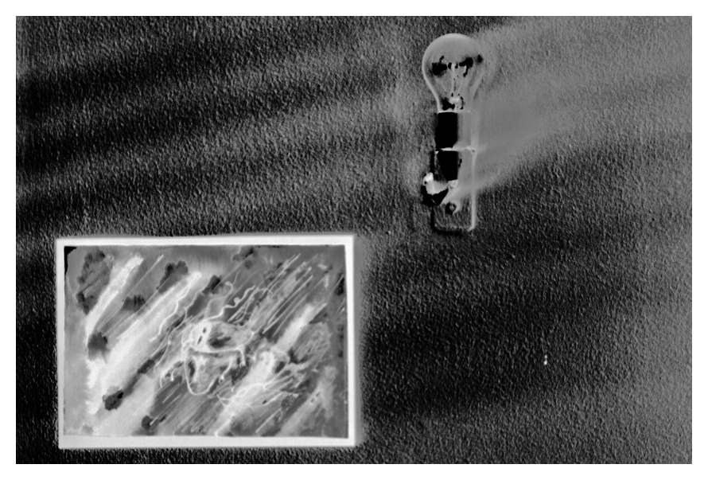
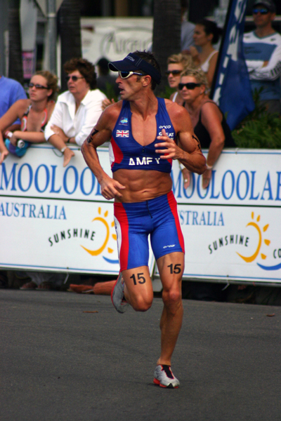
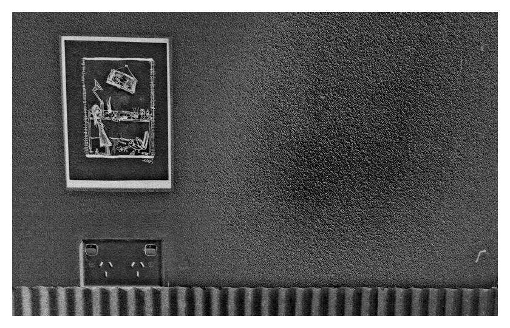
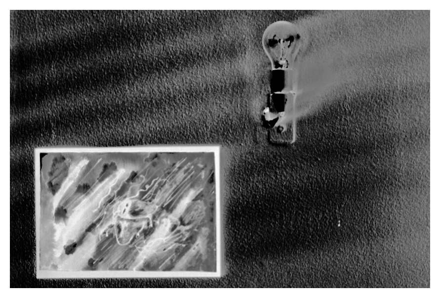
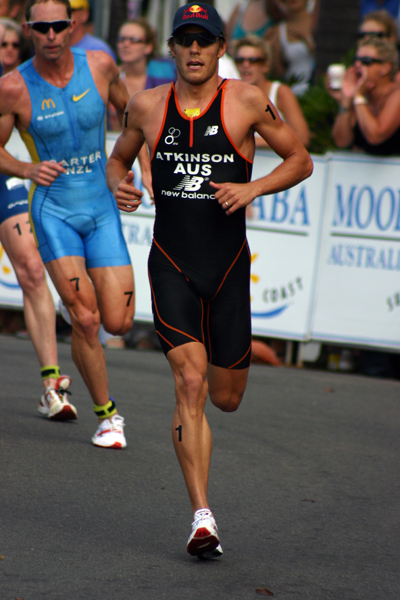
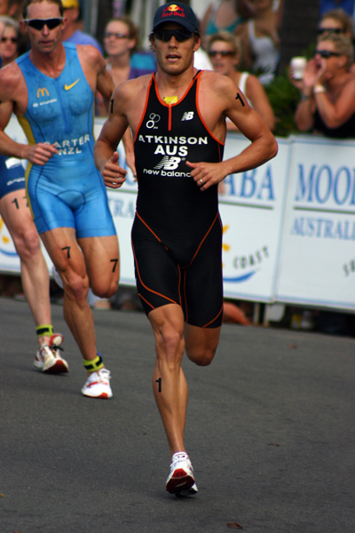

ABOUT ME
Hi I’m Lane — a haloumi whore and affogato addict who dreams of liberation and llama farming. I’ll love you forever if you’ll just read me aloud DFW’s Infinite Jest… a book I’ve owned forever but never read. If you’re not down for David can we fly to Tokyo, suck down saké, and sing karaoke until sunrise?
Music and art are the way to my heart when cheese and coffee aren’t appropriate. I’m real and really on Twitter @THINKLN.
Nb: I don’t understand footy, fishing, or photos with tied-up tigers in Thailand.
Above is my Tinder profile; verbatim. I strive to be 100% me in every aspect of my life and I say if you can’t use your Tinder profile as a sample of your writing you’re either a weak writer, a liar, or both.
Below are my Twitter photos: @THINKLN is where I share some of my wit, work, and moments that make me “me”.


 







 


Next Up: I Write, Create, and Conceptualise